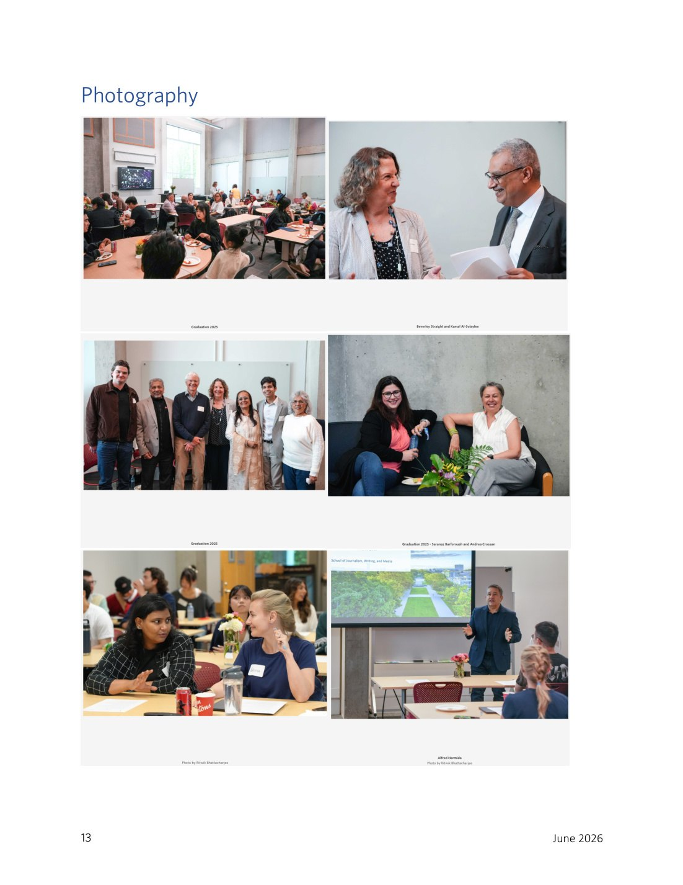
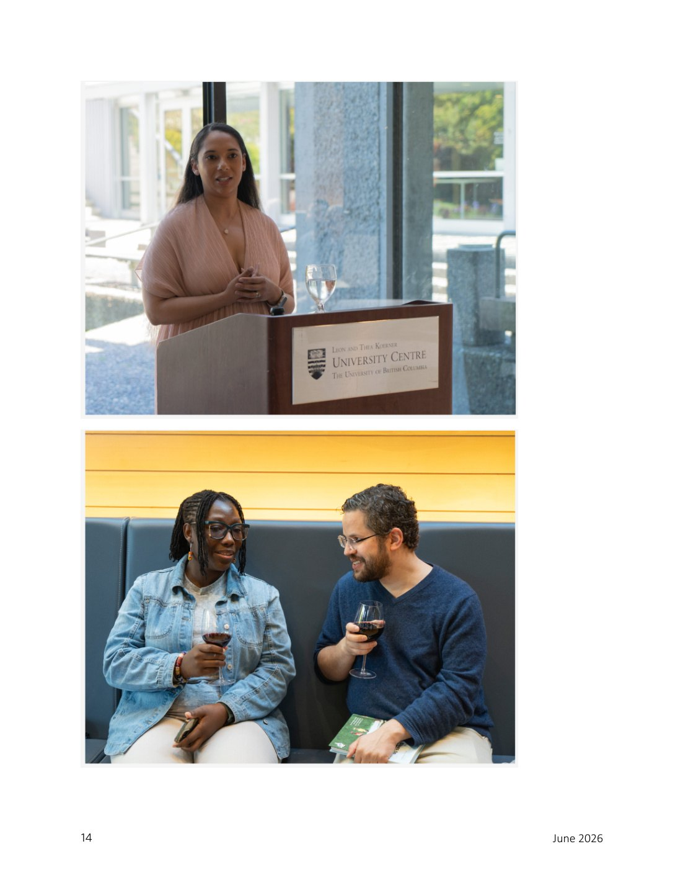
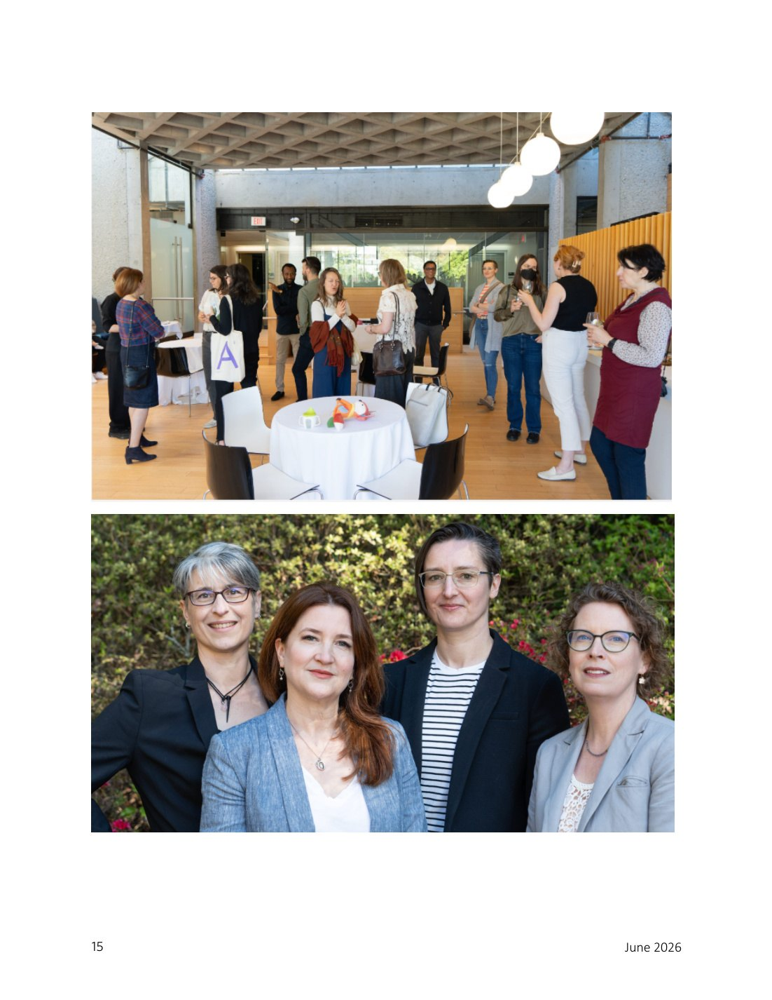

Events + Portraits
Graduation, guest speakers and public-facing moments
Event documentation and portraits supporting institutional memory and communications storytelling.
Photography Portfolio
Selected event, portrait, editorial and institutional photography from UBC communications work and related visual storytelling.
Photography Practice
Photography strengthens institutional communications by creating original visual evidence of people, events, community, leadership and place.
The portfolio examples currently available include graduation moments, event photography, portraits, speakers, public programs and UBC Music/School of Music event documentation.
Selected Photography
These first-pass composites come from the uploaded communications portfolio and can later be replaced with individual high-resolution image files.

Events + Portraits
Event documentation and portraits supporting institutional memory and communications storytelling.

Music + Events
Photography from music, performance and community-oriented event environments.

People + Place
Visual documentation of people and settings that can support stories, social posts, newsletters and event recaps.
Gallery Categories
Book launches, workshops, public talks, graduation and community programs.
Faculty, directors, students, guest speakers, alumni and community partners.
Images created to support stories, newsletters, social media and event reports.
Learning spaces, venues, atmosphere, performance settings and informal moments.
A curated section for personal photography that shows composition and visual sensibility.
Communications Value